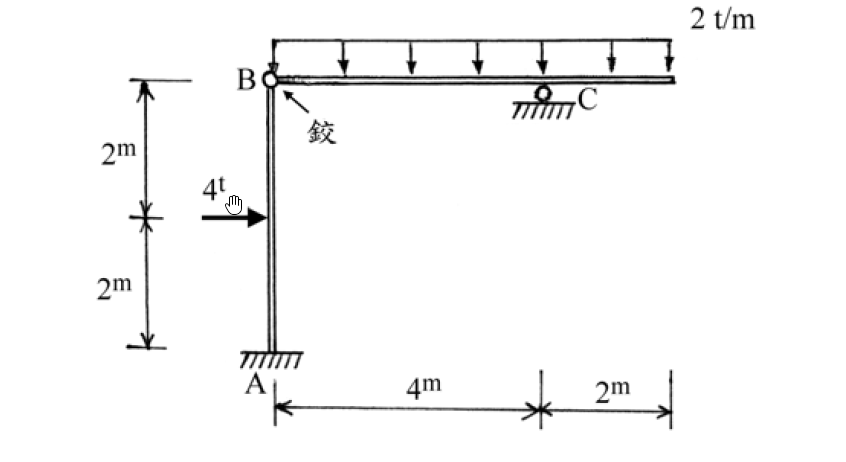
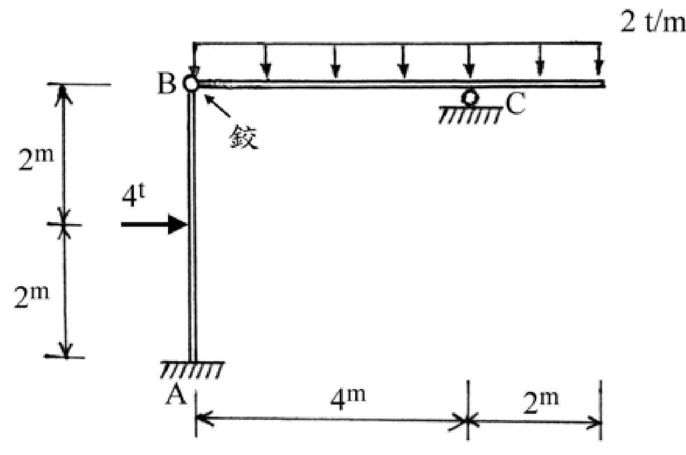
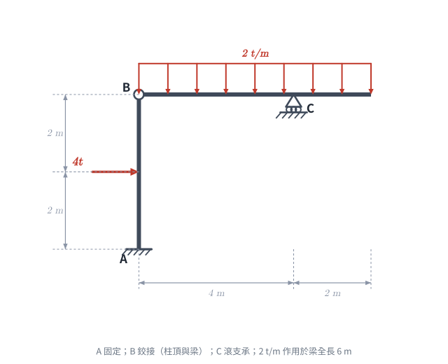
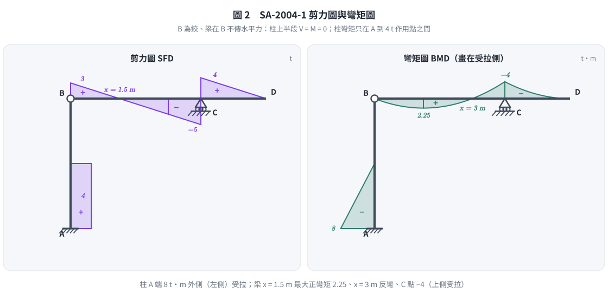

📄 題目正本（考卷原文、附圖與判讀清單；不含解法）
SA-2004-1 題目正本
本檔只記錄考卷上寫了什麼、圖上畫了什麼，不含任何解法。解析見同資料夾
SA-2004-1.md。
判讀清單經使用者確認前，狀態為「待確認」；確認後本檔原則上不再修改（改動須回考卷原圖並記 log）。
| 項目 | 內容 |
|---|---|
| 考卷 | raw/exams/SA-2004_結構學.pdf，第 1 頁（全一頁），第一題 |
| 考年 | 2004（民國九十三年）專技高考結構工程技師「結構學」 |
| 配分 | 25 分 |
| 附圖 | SA-2004-1-fig-1.png、SA-2004-1-fig-2.png |
| 判讀狀態 | 已確認（2026-11-05 使用者確認。原轉錄：2026-11-05 轉錄；PyMuPDF 110 dpi 整頁＋350–1000 dpi 局部放大；盲讀於開啟解析前完成） |
1. 考卷原文（逐字）
一、試分析如圖所示之靜定結構系統，並繪製剪力圖及彎矩圖。其中 A 端為固定支承；B 為鉸接點；C 為滾支承。（25 分）
2. 考卷給的公式、附表與參數
- 考卷沒有給任何參考公式或附表。
- 考卷沒有給 EI（靜定結構不需要）。
- 卷首注意事項：㈠不必抄題，作答時請將試題題號及答案依照順序寫在試卷上，於本試題上作答者，不予計分。㈡可以使用電子計算器。
- 考試時間：二小時。
3. 附圖

證據圖 SA-2004-1-fig-1.png

證據圖 SA-2004-1-fig-2.png（2026-11-05 自考卷重新擷取 500 dpi，無游標）
圖面文字照錄：2 t/m、B、鉸、C、2m、4t、2m、A、4m、2m
4. 判讀清單
| # | 項目 | 判讀 | 圖上／題文依據 | 把握 |
|---|---|---|---|---|
| 1 | A | 固定支承 | 題文；柱底剖線 | 確定 |
| 2 | B | 鉸接點（柱頂與梁鉸接） | 題文；圖上空心圓並以「鉸」字指示 | 確定 |
| 3 | C | 滾支承 | 題文；圖上圓輪 | 確定 |
| 4 | 柱 | A–B 垂直，高 4 m | 左側 2m｜2m 尺寸線（上端對齊 B） | 確定 |
| 5 | 梁 | B–C 4 m，C 至右端 2 m（懸臂） | 下方 4m｜2m 尺寸線 | 確定 |
| 6 | 均布載重 | 2 t/m 向下，作用於梁全長 6 m（B 至右端） | 載重框左端對齊 B、右端對齊梁端 | 確定 |
| 7 | 4t | 水平向右，作用於柱中點（距 A 2 m） | 箭頭對齊左側尺寸線中間刻度 | 確定 |
| 8 | 所求 | 剪力圖及彎矩圖 | 題文（不含軸力圖） | 確定 |
| 9 | 證據圖 | 舊 fig-1 滑鼠游標壓在 4t 箭頭上；新增 fig-2（500 dpi） | — | 確定 |
轉錄：2026-11-05（SA-U1-2 題目正本推廣・批 1）
確認：2026-11-05 使用者確認
考題編號：[SA-2004-1]
主分類： SA-U1-2 靜定結構之分析
副分類： 無
分析法： 靜定分析
標籤： 靜定剛架 剪力圖 彎矩圖 內部鉸
1. 題目（考卷原文見題目正本）
考卷原文、公式／附表、附圖與判讀清單（已確認）見
SA-2004-1-problem.md。本節只列解題時最容易讀錯的地方與本解使用的記號；題意以題目正本為準。

重繪自考卷附圖，依判讀清單 #1–#7 重繪。攔：均布載重只算到 C、4t 作用點讀成柱頂。
常見誤讀
| 項目 | 正確判讀 | 常見誤讀 |
|---|---|---|
| 均布載重範圍 | 梁全長 6 m（含 C 外伸 2 m） | 只到 C |
| 4t 作用點 | 柱中點（距 A 2 m） | 柱頂 B |
本解記號： 梁右端考卷未標名，本解記為 D；記號與正負號約定沿用 §4。
2. 考題核心精神與出題者意圖 (Core Concepts & Examiner's Intent)
本題為經典的靜定剛架分析。核心精神在於測驗考生能否正確運用「內部鉸接點 (Hinge)」作為分離體 (Free Body Diagram) 的切斷點，將複雜結構拆解為單純的靜定柱與梁來求解支承反力與鉸接傳遞力。
出題者刻意將滾支承放置於水平梁上，且梁無任何水平外力，意圖測驗考生是否能敏銳察覺鉸接點的水平傳遞力必然為零，進而發現「柱段受力點以上的部分完全無剪力與彎矩」的有趣現象。
3. 解題戰略地圖與陷阱分析 (Strategic Roadmap & Trap Analysis)
解題戰略：
- 將結構於 B 點鉸接處拆解為「水平梁 BCD」與「垂直柱 AB」兩個分離體。
- 先分析水平梁 BCD，利用 $\sum M_B = 0$ 求解滾支承反力 $C_y$，再由 $\sum F_y = 0$ 求解鉸接點垂直傳遞力 $B_y$。
- 由水平梁 $\sum F_x = 0$ 可得鉸接點水平傳遞力 $B_x = 0$。
- 接著分析垂直柱 AB，將求得之 $B_x, B_y$ 反向施加於 B 點。利用 $\sum F_x, \sum F_y, \sum M_A = 0$ 求得固定端 A 之三個反力。
- 分段寫出剪力與彎矩方程式，繪製 SFD 與 BMD，特別注意利用 $V(x)=0$ 定位出梁段的最大正彎矩位置。
陷阱分析：
- 柱段上半部零內力陷阱：因鉸接點水平傳遞力 $B_x = 0$，柱 AB 在受力點 ($y=2\text{m}$) 以上的區域，剪力與彎矩皆為零。考生若未確實繪製分離體，極易慣性假設全柱皆有彎矩分佈。
- 最大正彎矩位置：梁段的最大彎矩並不在中央，必須透過設定剪力 $V(x)=0$ 來精確定位。
- 符號與繪圖約定：彎矩圖繪製通常習慣畫於受拉側。柱段需仔細判斷受拉面 (本題下半柱為左側受拉)；懸臂外伸段為上側受拉。
3.5 變數層次分析 (Variable Hierarchy Analysis)
最終目標
繪製靜定剛架系統之剪力圖 (SFD) 及彎矩圖 (BMD)。
本題關鍵公式（依計算順序）
$$ \sum M = 0, \quad \sum F_x = 0, \quad \sum F_y = 0 $$
$$ V(x) = \int -w(x) dx $$
$$ M(x) = \int \boxed{V(x)} dx $$
L1：題目直接給定
- 符號 ∣ 數值 ∣ 說明
- $L_{AB}$ ∣ $4\text{ m}$ ∣ 柱 AB 總高
- $L_{BC}$ ∣ $4\text{ m}$ ∣ 梁 BC 段跨度
- $L_{CD}$ ∣ $2\text{ m}$ ∣ 梁外伸段 CD 長度
- $P$ ∣ $4\text{ t}$ ∣ 柱中點水平集中載重
- $w$ ∣ $2\text{ t/m}$ ∣ 梁向下降均布載重
L2：需知識點推導
步驟一：分離體與支承反力
- 符號 ∣ 公式／來源 ∣ 卡關?
- $C_y$ ∣ $\sum M_B^{\text{right}} = 0$ ∣
- $B_y$ ∣ $\sum F_y^{\text{right}} = 0$ ∣
- $B_x$ ∣ $\sum F_x^{\text{right}} = 0$ ∣
- $A_x$ ∣ $\sum F_x^{\text{left}} = 0$ ∣
- $A_y$ ∣ $\sum F_y^{\text{left}} = 0$ ∣
- $M_A$ ∣ $\sum M_A^{\text{left}} = 0$ ∣
步驟二：梁段與柱段內力
- 符號 ∣ 公式／來源 ∣ 卡關?
- $V_{BC}(x)$ ∣ $B_y - w x$ ∣
- $M_{BC}(x)$ ∣ $B_y x - \frac{1}{2} w x^2$ ∣
- $M_{\text{max}}^+$ ∣ $M_{BC}(x \text{ at } V=0)$ ∣
- $M_C$ ∣ $-\frac{1}{2} w L_{CD}^2$ ∣
- $V_{AB}(y)$ ∣ 取決於 $A_x$ 與 $P$ ∣
- $M_{AB}(y)$ ∣ $M_A - A_x y$ ∣
L3：深層知識（不懂就卡住）
- 知識點 ∣ 說明 ∣ 卡關?
- 內部鉸接點 (Hinge) 特性 ∣ 鉸接點無法傳遞彎矩，可作為拆解分離體 (Free Body) 的斷點，提供 $\sum M = 0$ 的額外方程式。 ∣
- 滾支承之反力限制 ∣ 滾支承僅能提供垂直反力，無水平反力，故本題梁段無水平載重時，內部鉸接點之水平傳遞力 $B_x = 0$。 ∣
- 剪力與彎矩之微分關係 ∣ 剪力為零處，彎矩有極值 (最大正彎矩)。需透過 $V(x)=0$ 找出該位置。 ∣
4. 步驟化詳細計算過程 (Step-by-Step Detailed Calculation)
Step 1：拆解分離體與求解支承反力
將結構於內部鉸 B 拆解，先取右側水平梁 BCD 為分離體：
- 水平梁全長 $6\text{ m}$，承受向下均布載重 $w = 2\text{ t/m}$，總等效集中力 $W = 2 \times 6 = 12\text{ t}$，作用於距 B 點 $3\text{ m}$ 處。
-
對 B 點取彎矩平衡求 $C_y$：
$$ \sum M_B = 0 \implies C_y \times 4 - 12 \times 3 = 0 $$
$$ 4 C_y = 36 \implies \boxed{C_y = 9\text{ t} (\uparrow)} $$ -
垂直方向力平衡求 $B_y$：
$$ \sum F_y = 0 \implies B_y + C_y - 12 = 0 $$
$$ B_y + 9 - 12 = 0 \implies \boxed{B_y = 3\text{ t} (\uparrow)} \text{ (作用於梁上)} $$ -
水平方向力平衡求 $B_x$：
$$ \sum F_x = 0 \implies \boxed{B_x = 0} $$
再取左側垂直柱 AB 為分離體：
- 承受外部水平力 $P = 4\text{ t} (\rightarrow)$ 於距 A 端 $2\text{ m}$ 處。
- B 點承受來自梁之反作用力：$B_x' = 0$、$B_y' = 3\text{ t} (\downarrow)$。
-
水平方向力平衡求 $A_x$：
$$ \sum F_x = 0 \implies A_x + 4 + B_x' = 0 \implies A_x + 4 = 0 \implies \boxed{A_x = -4\text{ t} \text{ (即向左 4t)}} $$ -
垂直方向力平衡求 $A_y$：
$$ \sum F_y = 0 \implies A_y - B_y' = 0 \implies A_y - 3 = 0 \implies \boxed{A_y = 3\text{ t} (\uparrow)} $$ -
對 A 點取彎矩平衡求 $M_A$：
$$ \sum M_A = 0 \implies M_A - 4 \times 2 - B_x' \times 4 = 0 \implies M_A - 8 - 0 = 0 \implies \boxed{M_A = 8\text{ t-m} (\text{逆時針})} $$
Step 2：計算梁段 (BCD) 之剪力與彎矩
設 $x$ 為自 B 點向右之距離 ($0 \le x \le 6\text{ m}$)：
-
BC 段 ($0 \le x < 4$)：
$$ V(x) = B_y - wx = 3 - 2x $$
$$ M(x) = B_y x - \frac{1}{2}wx^2 = 3x - x^2 $$
當 $V(x) = 0$ 時發生最大正彎矩：
$$ 3 - 2x = 0 \implies x = 1.5\text{ m} $$
$$ \boxed{M_{\text{max}}^+ = M(1.5) = 3(1.5) - (1.5)^2 = 2.25\text{ t-m} \text{ (下側受拉)}} $$
在 C 點 ($x=4$) 剛左側：
$$ V_C^{\text{左}} = 3 - 2(4) = -5\text{ t} $$
$$ M_C = 3(4) - 4^2 = -4\text{ t-m} \text{ (上側受拉)} $$ -
CD 外伸段 ($4 < x \le 6$)：
$$ V(x) = V_C^{\text{左}} + C_y - w(x-4) = -5 + 9 - 2(x-4) = 12 - 2x $$
端點檢核：於 $x=6$ 時 $V(6) = 12 - 12 = 0$，符合自由端條件。
此段亦可由自由端 D 向左計算，設 $x'$ 為距 D 點向左之距離：
$$ V(x') = w x' = 2 x' $$
$$ M(x') = -\frac{1}{2} w (x')^2 = -(x')^2 $$
於 C 點 ($x'=2$)：$M_C = -2^2 = -4\text{ t-m}$，計算結果一致。
Step 3：計算柱段 (AB) 之剪力與彎矩
設 $y$ 為自 A 點向上之距離 ($0 \le y \le 4\text{ m}$)：
-
下半段 ($0 \le y < 2$)：
剪力 $V(y) = 4\text{ t}$ (左側推力產生之剪力)
彎矩 $M(y) = M_A - A_x y = 8 - 4y$ (左側受拉為正)
在受力點 ($y=2\text{ m}$)：$M(2) = 8 - 8 = 0$ -
上半段 ($2 < y \le 4$)：
剪力 $V(y) = 4 - 4 = 0$
彎矩 $M(y) = 0$策略註解：因頂端 B 點無水平傳遞力 ($B_x=0$)，受力點以上的柱段並無承受任何水平方向的力量，故無剪力與彎矩。
Step 4：剪力圖 (SFD) 及彎矩圖 (BMD) 總結
- 剪力圖 (SFD)：
- 柱 AB：$0\sim2\text{m}$ 為 $+4\text{t}$ (矩形)；$2\sim4\text{m}$ 為 $0$。
- 梁 BCD：由 B 點 $+3\text{t}$ 直線遞減至 C 點左側 $-5\text{t}$ (於 $1.5\text{m}$ 處穿過零點)；C 點因 $9\text{t}$ 向上反力跳升至 $+4\text{t}$，再直線遞減至 D 點 $0$。
- 彎矩圖 (BMD) (繪於受拉側)：
- 柱 AB：於 A 端為 $8\text{ t-m}$ (畫於左側)，直線遞減至 $2\text{m}$ 處為 $0$；$2\sim4\text{m}$ 皆為 $0$。
- 梁 BCD：B 點為 $0$，呈拋物線於 $x=1.5\text{m}$ 達最大正彎矩 $2.25\text{ t-m}$ (畫於下側)，交於 $x=3\text{m}$ 為 $0$，至 C 點達 $-4\text{ t-m}$ (畫於上側)；CD 段亦為拋物線遞減至 D 點 $0$。

圖 2 剪力圖與彎矩圖（彎矩畫在受拉側；剪力在梁上正值畫上方，柱剪力正負沿用 Step 3）。數值由 §4 的反力沿桿積分重算後才畫。這張圖能攔下三種錯：柱彎矩一路畫到柱頂、柱受拉側畫反，以及把 C 點畫成正彎矩。
5. 關鍵爭議點與進階探討 (Critical Issues & Advanced Discussion)
- 無內力的陷阱區段：本題中，柱之上半部無剪力與彎矩內力，這在直覺上極易被考生忽略。必須堅持嚴謹的靜力平衡原則：由於鉸接點 B 不能傳遞彎矩，且梁上無水平載重導致滾支承 C 唯一的限制使 $B_x=0$，因此柱頂B點無任何水平力，導致負載以上的柱段如同懸臂之無載重段，內力為零。
- 作圖習慣與受拉側標示：結構學實務中，彎矩圖強烈建議繪製於「受拉側 (Tension Side)」，能直觀對應鋼筋混凝土結構中的主筋配置位置。本題柱 AB之下半段受拉側在左，梁 BC 段最大正彎矩受拉側在下，而支承 C 處負彎矩受拉側在上。作答時除了標註數值，繪製於正確側邊是拿滿分的關鍵。
- 分離體的重要性：此題型強調「以鉸接點拆解」及「逐段檢核邊界條件」的紮實功夫。若企圖直接硬解全結構的平衡方程，雖仍可得出反力，但在繪製內力圖時極容易發生符號錯亂，拆解分離體(FBD)始終是降低錯誤率與釐清觀念的最佳實務。
修正日期：2026-11-05（§1 改為指向題目正本並放重繪附圖（figs/SA-2004-1-fig-1-problem.svg）、加常見誤讀；圖由 gen_SA-2004-1.py 產生，可重跑）
圖解補繪：2026-11-05（圖 2 剪力圖／彎矩圖，向量圖，腳本 gen_SA-2004-1_vm.py，可重跑）